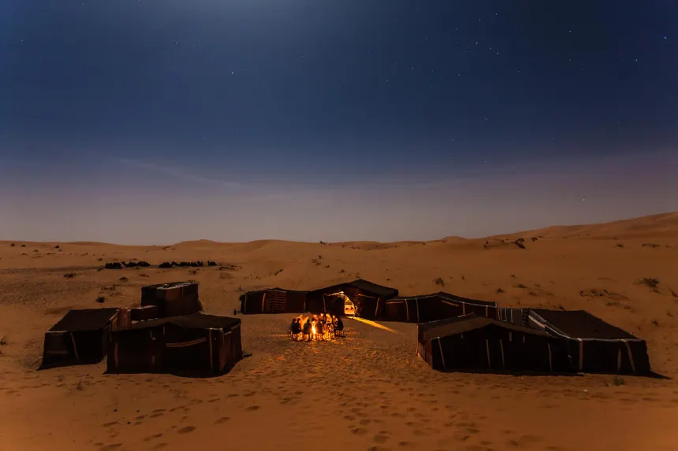
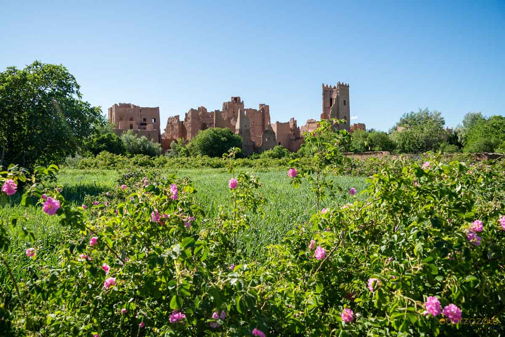
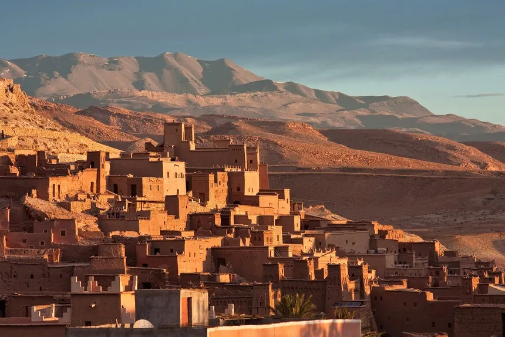
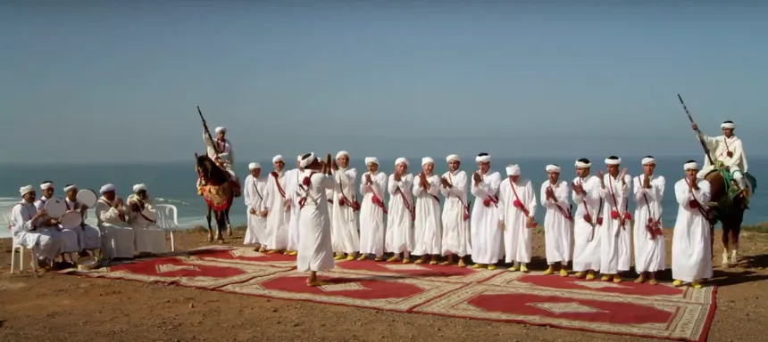
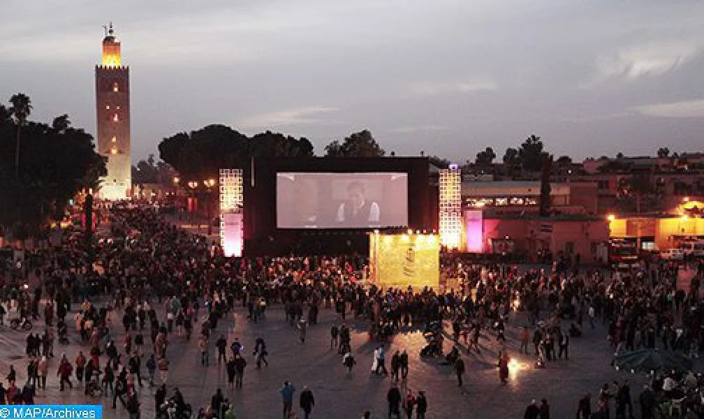

Day 1 – Arrival in Casablanca: Architectural Marvels & Islamic Artistry
Arrive at Mohammed V International Airport (CMN), where you'll be greeted by your guide and transferred to your hotel. After settling in, prepare to be amazed by the Hassan II Mosque. Inaugurated in 1993, this is one of the largest mosques globally, boasting the world's tallest minaret at 210 meters. An architectural masterpiece designed by Michel Pinseau, it's uniquely built partly over the Atlantic Ocean and can welcome 105,000 worshippers. Marvel at its retractable roof and the exquisite traditional Moroccan craftsmanship, including intricate Zellige tilework, carved plaster, and cedarwood, utilizing materials like marble from Agadir and cedar from the Middle Atlas. Thousands of Moroccan artisans contributed to its splendor.
Evening Focus: Moroccan Culinary & Artistic Introduction
Enjoy a welcome dinner featuring classic Moroccan dishes such as tagine and pastilla. This will be complemented by an introduction to the foundational principles of Islamic art as expressed in Moroccan architecture. We'll discuss how traditional designs ingeniously integrate concepts of natural ventilation, light management, and energy optimization – principles that continue to inspire sustainable and bioclimatic design today. The geometric patterns in Islamic art, particularly Zellige, also serve as inspiration for modern architectural modeling.
Day 2 – Rabat to Fes: Imperial Grandeur & Artistic Foundations
Journey to Rabat, Morocco's capital, to explore its historical highlights:
- The Kasbah of the Udayas: A picturesque fortress at the mouth of the Bou Regreg river.
- The Hassan Tower: The iconic minaret of an incomplete 12th-century mosque.
- The Chellah Necropolis: A fascinating site blending Roman ruins (Sala Colonia) with a Merinid Islamic necropolis, featuring a mosque and serene gardens.
Visit Rabat's Museum of Modern and Contemporary Art (MMVI) to view works by Moroccan artists, showcasing how art stimulates imagination and innovative thinking.
On the way to Fes, we'll stop in Meknès, an imperial city founded in the 11th century. Admire its imposing ramparts and the monumental Bab Mansour gate. Meknès, like Fes and Safi, is renowned for its traditional pottery and mosaics; Fes is particularly famous for its distinctive blue and white ceramics.
Arrive in Fes in the evening and check into a traditional riad nestled in the heart of the ancient medina, a UNESCO World Heritage site.
Day 3 – Fes: A Living Museum of Art, Craft & Knowledge
Immerse yourself in the Fes el-Bali medina, a UNESCO World Heritage Site and one of the world's largest living medieval cities. Today's exploration includes:
- Al Quaraouiyine University: Founded in 859 AD by Fatima al-Fihriya, it's recognized by UNESCO as the oldest existing, continually operating educational institution in the world.
- Chouara Tannery: Witness the ancient craft of leather processing, where hides are treated and dyed in large stone vats using traditional methods and natural colorants like henna, indigo, and saffron.
- Attarine Madrasa: A stunning example of Marinid architecture with intricate zellige tilework and carved cedarwood.
Artisan Workshops & Cultural Insights
Discover the meticulous artistry of Zellige tilework (intricate geometric mosaics), cedar carving, and marquetry (inlaid wood designs) in workshops where skills have been passed down through generations. Participate in a hands-on Zellige or Calligraphy workshop. Moroccan calligraphy is a vibrant art form, with contemporary artists like Mehdi Qotbi and Hassan Massoudy pushing its boundaries.
The evening features a lecture on Moroccan aesthetic principles in art and architecture, touching upon how traditional building techniques inspire sustainable construction and bioclimatic design.
Day 4 – Fes to Merzouga: Atlas Mountains & Sahara Gateway
Journey south through the scenic Middle Atlas Mountains, passing the alpine-style town of Ifrane and the cedar forests of Azrou, home to Barbary macaques. After a lunch stop in Midelt, descend into the Ziz Valley, a stunning landscape of lush palm groves and fortified kasbahs. Arrive in Merzouga, the gateway to the Sahara, and prepare for an unforgettable camel trek into the Erg Chebbi dunes.
Witness a spectacular Saharan sunset from atop a high dune. Tonight, experience traditional Berber hospitality with dinner and music under a canopy of stars at a desert camp. This connects deeply with the Amazigh (Berber) cultural heritage.
Day 5 – Sahara Culture: Gnawa Rhythms & Nomadic Life
Wake early to witness the breathtaking desert sunrise over the dunes. Today is dedicated to exploring Saharan culture:
- Visit the village of Khamlia, home to the Gnawa people, descendants of Sub-Saharan Africans. Experience their spiritual music and dance, characterized by hypnotic rhythms, religious chants, and ritual dances, often performed during "lilas" (ceremonies). Key instruments include the guembri (a three-stringed lute) and qraqeb (metal castanets). The annual Gnaoua and World Music Festival in Essaouira is a major celebration of this tradition.
- Participate in a rhythm workshop to learn about Gnawa music's role in Moroccan heritage.
- Meet nomadic Berber families, gaining insight into their resilient way of life. Explore local fossil fields, remnants of a time when the Sahara was an ocean.
The Moussem de Tan-Tan, an annual gathering of nomadic tribes, exemplifies the richness of Saharan traditions. The Hassanie music of the Sahrawi people, with poetic songs accompanied by instruments like the tidinit and tebal, is another vital cultural expression.
In the evening, enjoy a storytelling session featuring Saharan myths and legends.
Day 6 – Todra & Dades Gorges: Nature's Sculpted Masterpieces
Travel to the impressive Todra Gorge, a massive trench with towering limestone cliffs reaching up to 300 meters. Enjoy a walk along the riverbed, appreciating the scale and beauty of this natural wonder. Continue through the Valley of Roses (famous for its damask rose cultivation, especially vibrant in spring) to the scenic Dades Gorge, renowned for its dramatic rock formations, often called "monkey fingers," and winding roads.
Stay overnight in a charming kasbah-style guesthouse. The evening activity will be an introduction to landscape photography and sketching, inspired by the stunning natural surroundings. Consider the work of Moroccan photographers like Touhami Ennadre, known for his evocative black and white captures of the country's textures and contrasts.
Day 7 – Ouarzazate & Cinema Culture: Morocco's Hollywood
Drive to Ouarzazate, a city often dubbed the "Hollywood of Morocco" due to its role as a major film-making location. Visit:
- Atlas Film Studios: One of the largest film studios in the world, where numerous international blockbusters were filmed.
- The historic Kasbah Taourirt: A magnificent example of Amazigh earthen architecture, formerly a residence of the powerful Glaoui family. Its intricate geometric motifs, sculpted windows, and contrasting plain exteriors with opulent interiors are remarkable. It has also served as a backdrop for many films.
Learn how Morocco's diverse landscapes and unique architecture have attracted filmmakers for decades. Attend a presentation on Moroccan cinema, featuring pioneers such as:
- Ahmed Bouanani (1938-2011): Cinéaste, poet, and author of *La Septième Porte* (a history of Moroccan cinema), known for his experimental film *Mirage* (1979).
- Souheil Ben Barka (b. 1942): Director known for historical epics like *Les Mille et Une Mains* (1973).
- Other key figures include Mohamed Ousfour (director of the first Moroccan feature, *Le Fils Maudit*, 1958) and Mostafa Derkaoui.
The presentation may also touch upon how cinematographic techniques inspire AI in image processing and facial recognition, linking art to modern technology.
Day 8 – Aït Ben Haddou to Marrakech: Ksar Majesty & Atlas Crossing
Explore the UNESCO World Heritage site of Aït Ben Haddou, an iconic ksar (fortified village) made of traditional pisé (rammed earth). This stunning example of southern Moroccan earthen architecture, with its interconnected houses, narrow alleys, and defensive towers, was once a crucial stop for caravans traversing the Sahara. Climb to the top of the ksar for panoramic views of the Ounila Valley.
Afterward, embark on a scenic drive towards Marrakech, crossing the majestic High Atlas Mountains via the Tizi n’Tichka Pass (2,260m), offering breathtaking vistas.
Optional Activity: Participate in a plein-air sketching session during one of the scenic stops on the drive, capturing the grandeur of the Atlas landscapes.
Day 9 – Marrakech: The Red City's Cultural Mosaic
Discover the enchanting "Red City" of Marrakech. Explore its iconic sites:
- The Koutoubia Mosque: Marrakech's most famous landmark, with its impressive 12th-century minaret (exterior view for non-Muslims).
- Bahia Palace: A stunning 19th-century palace showcasing opulent Moroccan craftsmanship, with intricate stucco work, zellige tiles, and painted cedarwood ceilings.
- Saadian Tombs: Magnificent mausoleums dating back to the 16th century, rediscovered in 1917.
- Majorelle Garden: A tranquil botanical garden designed by French painter Jacques Majorelle, once owned by Yves Saint Laurent, famous for its intense cobalt blue accents.
Visit the Berber Museum (Musée Berbère) within the Majorelle Garden to learn about the rich culture and traditions of Morocco's indigenous Amazigh people. Admire Berber carpets from the Atlas region, known for their symbolic geometric motifs, and intricately crafted Berber jewelry, often made of silver and adorned with semi-precious stones, carrying deep cultural significance.
Evening Spectacle: Jemaa el-Fnaa
In the evening, immerse yourself in the vibrant, sensory overload of Jemaa el-Fnaa square. This UNESCO-recognized "Masterpiece of the Oral and Intangible Heritage of Humanity" comes alive with storytellers, musicians, snake charmers, food stalls, and more. Witness a traditional Halqa (circle storytelling) performance, a captivating form of street theatre.
Creative Reflections & Enrichment Activities
Deepen your cultural immersion with these optional activities, drawing inspiration from Morocco's rich artistic heritage
- Contemporary Art Gallery Tour: Explore works by leading Moroccan artists such as Mohammed Melehi (École de Casablanca, known for geometric abstraction), Chaïbia Talal (celebrated for her vibrant, naïve style), Hassan El Glaoui (famed for his depictions of fantasia horsemen), and Ahmed Cherkaoui (a pioneer of modern Moroccan art blending traditional motifs with abstraction). Also discover artists like Farid Belkahia, known for his work in hammered copper and leather.
- Photography Workshop: Inspired by the poignant portrait style of Leila Alaoui (1982-2016), whose series *Les Marocains* documented the nation's diversity, or the ethnographic photography of Jean Besancenot (1902-1992), who documented traditional Moroccan costumes.
- Rhythm & Dance Session: Explore the spiritual depths of Gnaoua music and dance, or the communal energy of Amazigh traditions like Ahwach (a collective performance from southern Morocco) and Aïta (a rural musical genre with metaphorical sung poetry). 
- Introduction to Traditional Moroccan Theatre: Learn about figures like Tayeb Saddiki (1939-2016), considered the father of modern Moroccan theatre, who masterfully blended oral tradition with Western influences in works like *Al Harraz*. Explore other forms like Lbsat (satirical theatre) and theatre based on the poetic works of Sidi Abderrahman El Majdoub.
- Fantasia Performance: Experience the vibrant tradition of Tbourida, a traditional equestrian performance that showcases horsemanship, music, and the art of war. Often performed during festivals and celebrations, riders dressed in traditional attire execute synchronized movements while firing blank shots from their rifles, creating a stunning visual spectacle. This art form reflects the historical significance of cavalry in Moroccan society and is celebrated for its beauty and cultural heritage.

Moroccan Film Screenings & Discussion: Delve into Moroccan cinema with screenings like *Mirage* (1979) by Ahmed Bouanani, followed by discussions on its themes and artistic significance. 